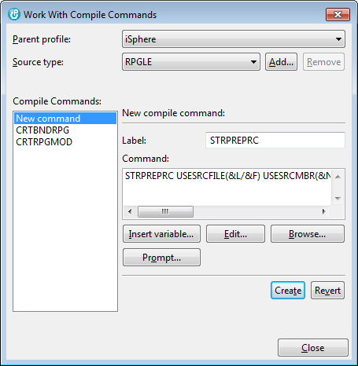

The main purpose of the STRPREPRC utility is to store the creation command along with object specific creation parameters in the source code. When it is used in combination with a Software Change Management System (CMS), it is also possible to pass the basic creation command to the utility by the CMS and override object specific creation parameters.
Furthermore STRPREPRC can store the source file, library and member in the object description of a given object. That is very useful in case you use STRPREPRC to create non-source objects such as data areas or job queues or whatever else.
Last but not least it can create write the job log messages to an EVFEVENT file member for object creation commands that do not have an *EVENTF option. That is really cool, for example, when you use the utility to create service programs or programs.
All parameters of the utility are described in the help text of the command. So please prompt the command and press F1 to get information about a specific parameter.
The most important parameters are:
Less important parameters are:
All other parameters are just variables that you can use the way you want.
If you want to compile your objects with the STRPREPRC utility, you should create a Compile command for it. You can do so from the context menu of a source member or an i Project. Select Work with compile commands... and New command and enter a label, e.g. STRPREPRC. Then enter the command as:

| Feel free to change the command defaults of the STRPREPRC command from '*NONE' to '*DFT' to automatically assign the required source file and source member parameters to their related replacement variables. |
You can easily change the command default values with the CHGDFTCMD likes this:
This way the parameter values of USESRCFILE and USESRCMBR are automatically assigned to replacement variables &OB, &SL, &SF and &SM.